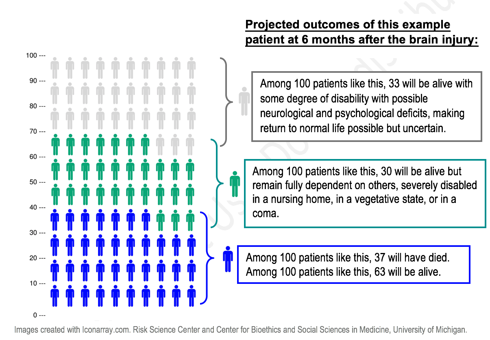

Example of how the IMPACT-model may use a patient’s information to estimate the outlook at six months after the injury
58 year-old patient with traumatic brain injury presents with both pupils reactive to light, normal oxygen level at the accident scene but with low blood pressure at the accident scene, with head CT showing “diffuse injury grade 2”, and traumatic subarachnoid blood, but no epidural blood on CT, and extensor posturing on the motor exam on admission.
There are two different treatment goals that you will be asked to choose between. One treatment goal is survival of your loved one, no matter what it takes. The other goal is maximizing comfort for your loved one, so that they do not suffer.